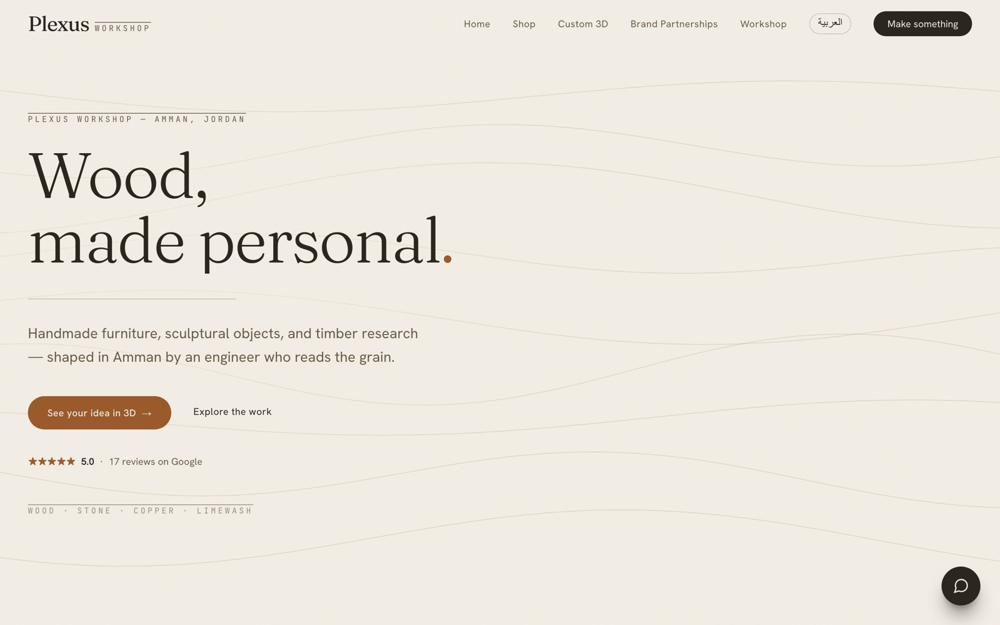

Brand website
Plexus Workshop
A premium woodworking brand, brought online.We turned a real wood workshop into a recognized online brand — a fast, bilingual-feeling site with custom product renders and a calm, crafted feel that matches the work it sells. Built in Next.js and deployed on Vercel, it’s designed to win trust and pull in B2B leads, not just look pretty.
Workshop to web brand — a site built to attract clients, not just exist.
Visit plexusworkshop.com